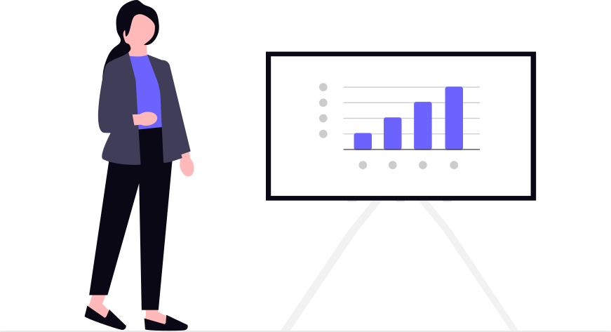
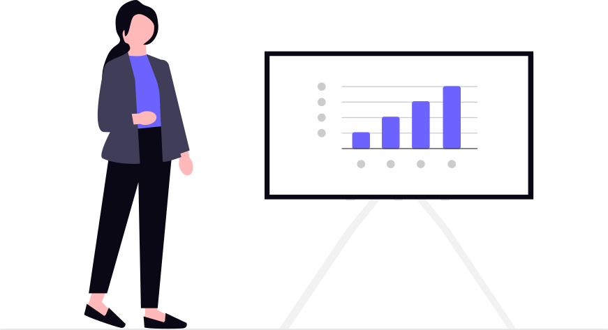
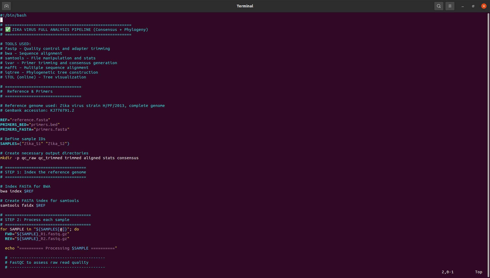
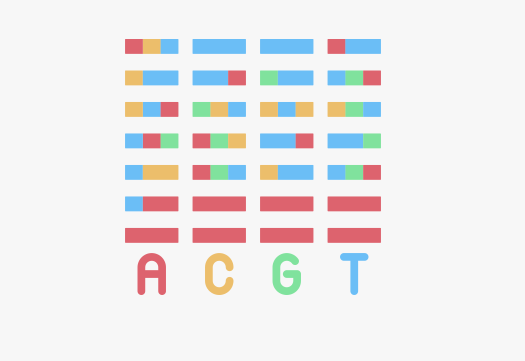
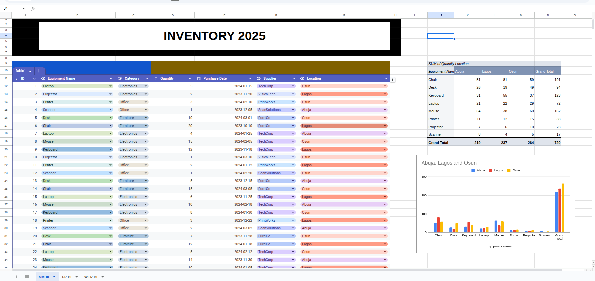
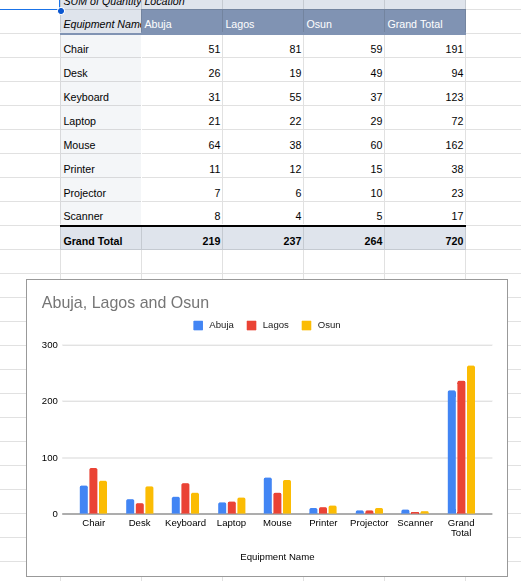

Hi, My name is Grace Adeloye from Osun State, Nigeria. I am a Data Analyst and Bioinformatics enthusiast who loves turning messy data into clear, actionable insights. I work with Python, Power BI, Excel, and Bash to automate tasks, build dashboards, and explore data in meaningful ways. I am currently pursuing a Masters in Bioinformatics, and I enjoy combining my technical skills with curiosity to solve real-world problems. When I am not analyzing data, I am probably learning something new or exploring ways to make data more useful for people.
 Sales Analysis Dashboard
Sales Analysis DashboardAnalyze sales trends, top-selling products, and revenue metrics.
 

 Python Data Processing
Python Data ProcessingUtilized Python (Pandas, Numpy, Matplotlib) for advanced data cleaning and manipulation.
.png)
.png)
 Bash/Linux Data Operations & Bioinformatics
Bash/Linux Data Operations & BioinformaticsApplied Bash scripting and designed pipelines for nucleotide sequence analysis.
  Excel Automation
Excel AutomationCreated automated Excel workflows for data cleaning, transformation, and visualization.
 